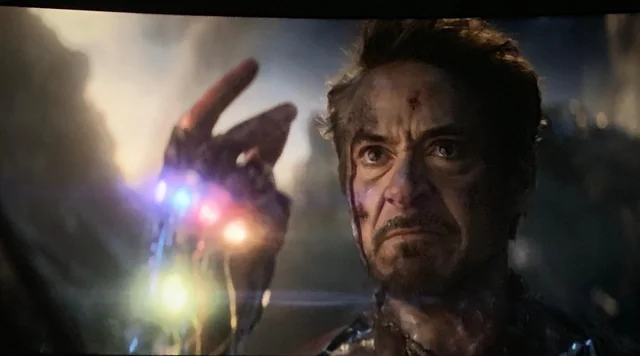

IRON MAN: THE RISE OF A HERO
When Iron Man (Tony Stark) first hit the big screen in 2008, few could have predicted the massive cultural and cinematic impact that would follow.

Tony Stark is a genius billionaire inventor who transforms from a self-centered weapons manufacturer to a selfless superhero in the iconic Iron Man franchise.
Known for his wit, charisma, and high-tech suit, Iron Man is one of the most beloved and relatable characters in the Marvel Cinematic Universe (MCU).
The arc of Iron Man symbolizes redemption, as Tony Stark evolves from a reckless billionaire to a hero who ultimately sacrifices everything to save the universe.
Iron Man's journey is defined by his struggle to balance his ego with his growing responsibility as a hero, ultimately defining his legacy in the MCU.
Iron Man, one of Marvel's most iconic superheroes, is not only known for his genius intellect, advanced technology, and sharp wit but also for his evolution as a hero.
The Avengers
When Iron Man met the Avengers, a new era of heroism began. Together, they proved that even the greatest heroes need each other to save the world.
Iron Man's brilliance and vision were the spark that united the Avengers.
his genius and sacrifice, he showed them that being a hero is about more than just strength-it’s about heart.
Iron Man didn’t just fight alongside the Avengers—he helped lead them to victory. His genius and sacrifice became the backbone of Earth’s mightiest heroes.
From the moment Tony Stark joined the Avengers, everything changed. His intelligence, leadership, and willingness to sacrifice for the greater good set the tone for the team.
Iron Man’s ultimate sacrifice defined the true meaning of heroism—putting the universe above himself and proving that even a genius billionaire can be a symbol of selfless courage.
I Am Ironman
Iron Man didn’t just join the Avengers—he helped create them. His genius, heart, and sacrifice became the cornerstone of Earth’s mightiest heroes

When Iron Man met the Avengers, a new era of heroism began. Together, they proved that even the greatest heroes need each other to save the world.
Tony Stark's final act in Endgame wasn’t just a heroic sacrifice; it was the culmination of his journey from a selfish genius to a selfless hero who gave everything to save the universe.
Iron Man’s moment in Avengers: Endgame encapsulated everything that made him a hero—brilliant,and willing to sacrifice his life for the greater good.
Iron Man's journey is defined by his struggle to balance his ego with his growing responsibility as a hero, ultimately defining his legacy in the MCU.
Iron Man, one of Marvel's most iconic superheroes, advanced technology, and sharp wit but also for his evolution as a hero.
Web of Spider-Man
Being Spider-Man isn't a job; it's a lifestyle.
And sometimes, that lifestyle means being up all night while the world sleeps." Reflects his tireless nature and the sacrifices he makes to protect the city.
You ever feel like you’re juggling a million things at once? Yeah, that's my average day—saving the world, keeping my secret identity, and trying not to mess up dinner.
A humorous take on the constant balancing act Spider-Man faces between his personal and hero lives.
"Every day is a new adventure in New York City. One minute I’m stopping a robbery, the next I’m dodging giant sandstorms. Who knew being a hero could be so unpredictable?"
"There are days I wonder if it’s worth it. But then I swing over the skyline and remember why I wear this suit. Someone has to protect these people." A more introspective line, reflecting on the challenges and responsibilities Spider-Man faces.
The Amazing Spider-Man
"The hardest part about being Spider-Man? Not letting your loved ones know just how dangerous your life really is. I can save the city, but I can't always save them from the truth."
A more vulnerable side of Spider-Man, grappling with the dangers his double life creates.
"I’ve learned that sometimes, it’s the little things that count. A helping hand, a kind word, or just being there for someone in their darkest moment."
"They say with great power comes great responsibility. But what they don’t tell you is how exhausting that responsibility can be."
Reflects Spider-Man's belief that being a hero isn't just about stopping supervillains, but about being present for others.
I swing through the city, dodging bad guys, but there’s nothing quite like the feeling of finally catching your breath after a long day of saving lives." A more lighthearted, yet reflective take on the physical and emotional exhaustion of being Spider-Man.
Superior Spider-Man
"The Power of Youth and Responsibility: How Tom Holland's Spider-Man Redefines What It Means to Be a Hero"
"Swinging Between Worlds: How Spider-Man Balances School, Friendship, and Saving the Day"
"Avengers, Villains, and Heartbreak: Tom Holland’s Spider-Man and the Journey of Growing Up"
A look at how Tom Holland’s Spider-Man started as Tony Stark’s apprentice and gradually found his identity as a standalone superhero.
Exploring how Spider-Man’s multiple appearances across different dimensions (as seen in No Way Home) challenges his sense of self and the idea of who he is beyond the mask.
from his budding romance with MJ to the loss of his mentor, Tony Stark.A look at how Peter Parker has faced increasingly complex challenges, from saving his neighborhood to dealing with multiversal threats in the MCU films.
Loki: Chaos Personified
Loki is more than just a villain

he's a complex anti-hero whose journey of redemption, rivalry, and self-discovery has captivated audiences from the start.
The God of Mischief, Loki, is as unpredictable as he is charismatic.Loki’s journey is one of self-reinvention. From Asgard’s mischievous prince to a deeply conflicted anti-hero, his character proves that the path to redemption is never straightforward
His evolution from villain to anti-hero challenges our ideas of loyalty, family, and what it truly means to be a hero.
loki's charm lies in his contradictions: a master of deception, yet deeply vulnerable; a trickster, yet searching for meaning.His character is a reminder that no one is ever just one thing.
From trickster to anti-hero, Loki’s character arc is one of the most fascinating in the MCU, showing that even the most cunning and misunderstood can find their place among the stars.
Loki: The Trickster King
the God of Mischief dives deeper into the multiverse, exploring new timelines and facing even greater threats—while still trying to outsmart everyone, including himself.
the God of Mischief has returned to redefine his destiny—this time, the stakes are higher, the timelines more tangled, and the consequences more personal than ever before.
Loki takes the trickster god on a wild ride through the multiverse, where he must face his past, and confront what it truly means to be 'himself.
the lines between hero and villain blur even further. With time unraveling around him, Loki is forced to choose between chaos.
the God of Mischief faces the tangled consequences of his own actions, bringing together old allies and dangerous new foes in a battle for control over the multiverse.
he God of Mischief continues his unpredictable journey through time and space—facing new challenges,new versions of himself.
Loki’s Wild Ride
Loki's arrival in The Avengers wasn’t just a villainous act—it was the spark that ignited the formation of Earth’s mightiest heroes.
his deceptive charm and godlike ambition, he proved that the greatest threat to the world could come from within.
KnIn The Avengers, Loki is the perfect villain: clever, calculating, and just unpredictable enough to push the team to their limits.
His manipulation of the heroes isn’t just a battle of strength—it’s a battle of wits and wills.
Loki in The Avengers represents more than just chaos; he embodies the challenge that unites the Avengers.By forcing them to confront their own weaknesses, he becomes the dark mirror reflecting what they could become without unity.
Loki’s role in The Avengers proves that even the most powerful villains have vulnerabilities. With his complex backstory and nuanced character, he challenges the team in ways that no one else could—making him a villain we love to hate.
About Me
Hi there, I'm Rohit Maurya and I created this blog to share my passion for Movies and character! As a software engineer by profession, Movie provides the perfect outlet for my curiosity and creativity. This blog allows me to connect with like-minded Think while documenting my own journey around the globe. I hope my stories, photos, videos ,and tips will inspire you to step out of your comfort zone, explore new Movies, and create your own memorable experiences. Thanks for joining me!